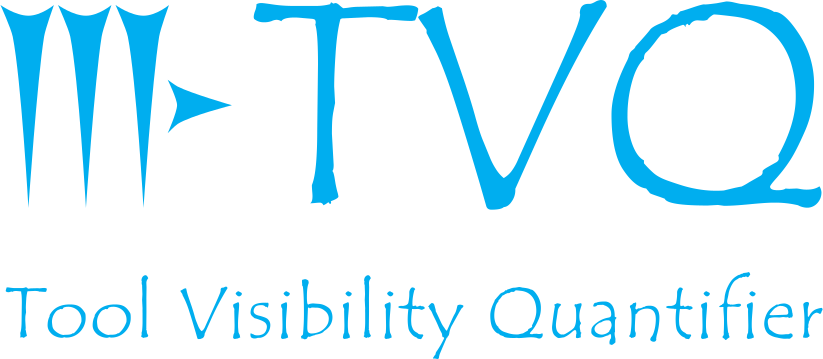

Scope
Study the impact of disseminating software via package management systems: Bioconda, Bioconductor, BioTools, and ToolShed.
Scale
Studying more than 23,000 software packages and their more than 18,000 scholarly articles.
Impact
Motivate scientists to invest in disseminating their software via package management systems. Dissemination of more software via package management systems will lead to a more straightforward composition of computational pipelines and less redundancy in software packages.